You RRR a Beginner: R, RStudio and Posit Cloud 👨💻
MATH 4720/MSSC 5720 Introduction to Statistics
Let’s get equipped with our tools!
R and RStudio
- R: free open-source programming language
- R is mainly for doing data science with strength in statistical modeling, computing and data visualization

- RStudio 1: interface for R, Python, etc called an IDE (integrated development environment), e.g. “I write R code in the RStudio IDE”.
- RStudio is not a requirement for programming with R, but it’s commonly used by R developers, statisticians and data scientists.
RStudio is a product of Posit data science company.
- The first tool we need is R and RStudio. They are two different things.
- With packages, we can do lots of things without writing our own code, and we can just use the functions provided in packages to do our job. It saves us lots of time.
- A language with many great add-on packages can become a very useful language.
- packages: which is a collection of functions and data for people to use.
- Unlike other languages, R was created by statisticians, for statisticians to use.
- So R is not a general-purpose programming language like python or java, but it is specifically for data science. And that’s probably why you don’t learn R in an intro programming course.
- So you can view Python as a smart phone. It can do many different things, phone, camera, email, social media. But R is like a high quality camera. It can’t receive emails, but it produces high quality photos.
- RStudio is not a programming language, but a software application.
- Code itself is just a text file. You can use any text editor or software to write your code.
R and RStudio Interface
- RStudio IDE includes
- a viewable environment, a file browser, data viewer, and a plotting pane. 👍
- also features integrated help, syntax highlighting, context-aware tab completion and more! 😄
R
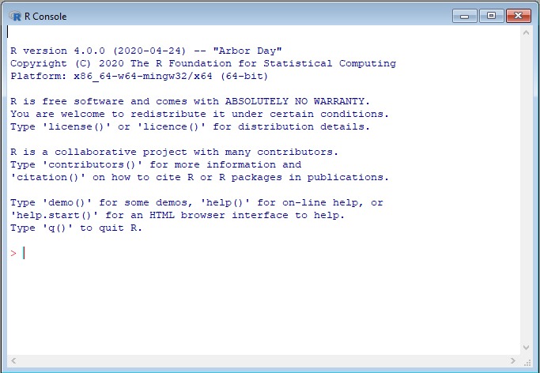
RStudio
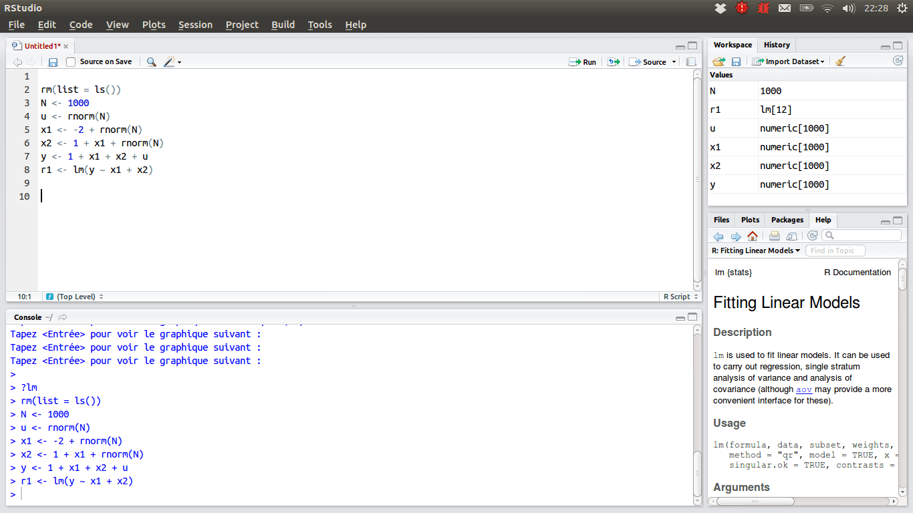
R Packages 📦
Packages wrap up reusable R functions, the documentation that describes how to use them, and data sets all together.1
As of August 2025, there are about 22510 R packages available on CRAN (the Comprehensive R Archive Network)!2
Let’s work with an important subset of these!

☁️ Posit Cloud - Statistics w/o hardware hassles
- 😎 We can implement R programs without installing R and RStudio in your laptop!
- 😎 Posit Cloud lets you do, share and learn data science online for free!
😞 R/RStudio: Lots of friction
- Download and install R
- Download and install RStudio
- Install wanted R packages:
- rmarkdown
- tidyverse
- …
- Load these packages
- Download and install tools like Git
🤓 Posit Cloud: Much less friction

- Go to https://posit.cloud/
- Log in
>hello R!- Why I choose use RStudio in the cloud for you to code in R? Well if I want every one of you use R and RStudio locally in your computer, you have to (_____). And we need some magic to make sure everyone gets the coding environment ready.
- Instead, with the Cloud-based solution, you just need to login, then you start writing code right away.
- Posit Cloud provides you with the latest version of R and RStudio. No installation is required.
- Doesn’t mean you should always use Posit Cloud. It’s not free if you need more resources.
- After you write more and more R code, you should absolutely install R and Rstudio into your local machine.
Sign Up Posit Cloud
- Step 1: In the Posit website https://posit.co/, choose Products > Posit Cloud as shown below.
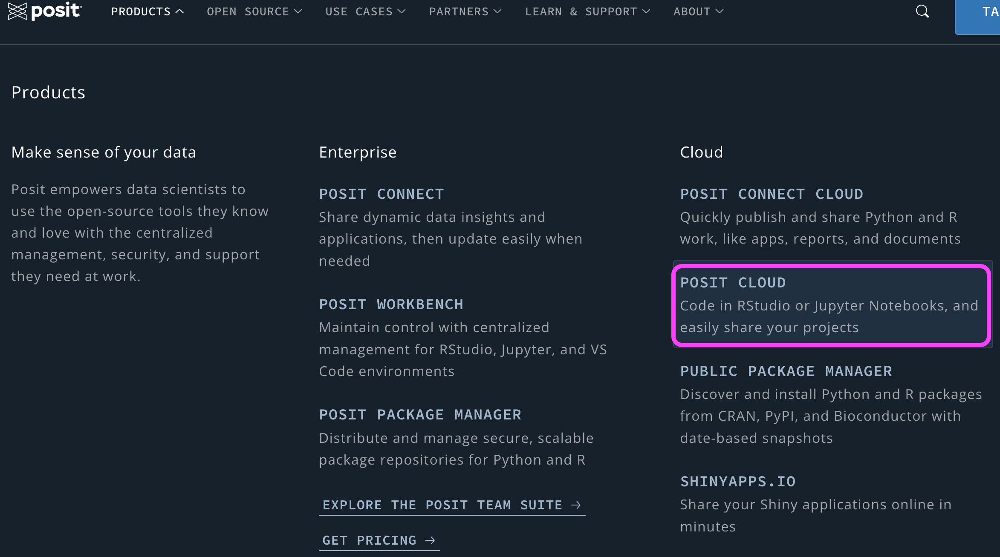
Sign Up Posit Cloud
Step 2: Click GET STARTED.
Step 3: Free > Sign Up. Please sign up using your Marquette email address or the one you prefer.
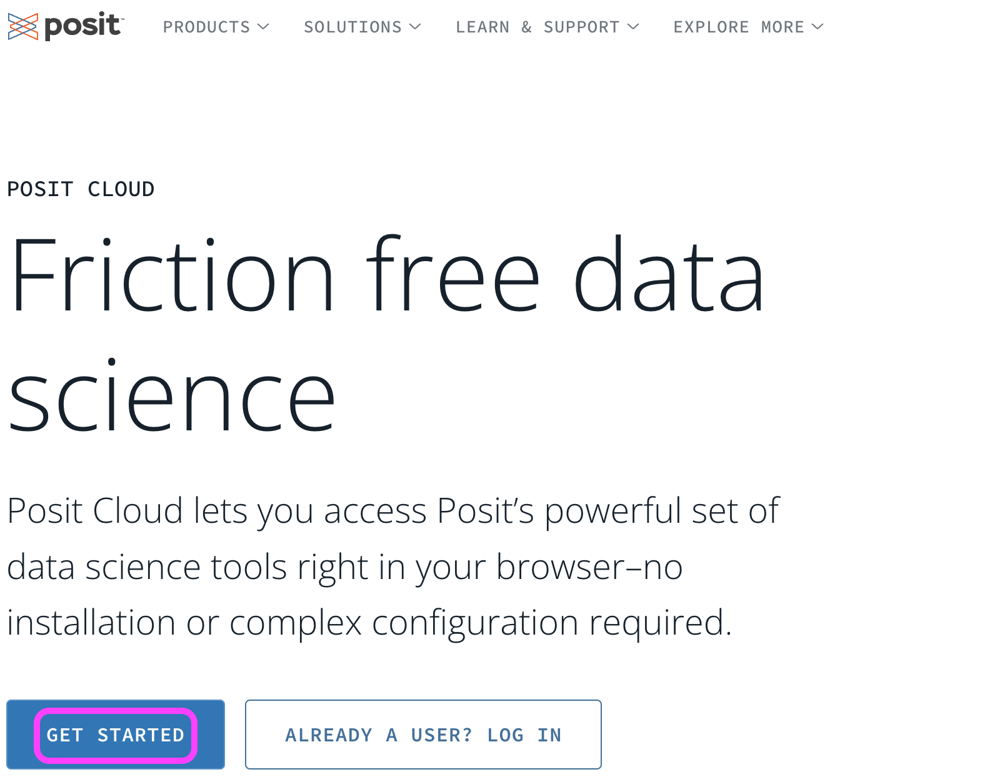
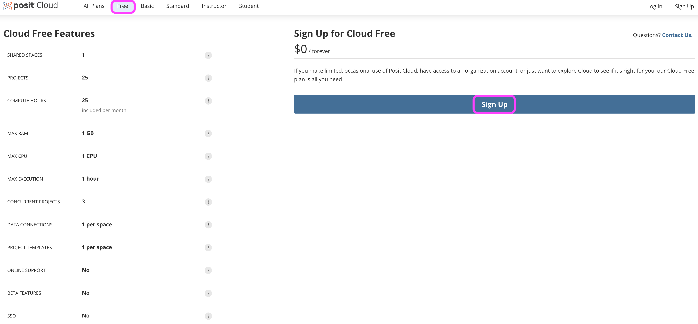
New Projects
In Posit Cloud, click New Project > New RStudio Project, then you are all set!

New RStudio Project

First R Code in Posit Cloud!
Give your project a nice name (click Untitled Project), math-4720 for example.
First R code:
"Hello WoRld!"or2 + 4after>in the Console pane.Change the editor theme: Tools > Global Options > Appearance

Working in RStudio
RStudio Panes
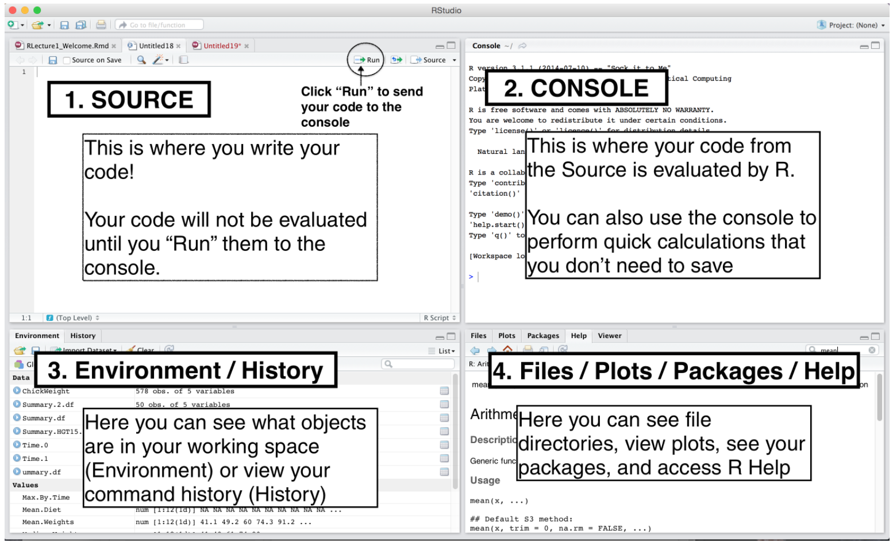
- In RStudio, there are 4 main panes, source pane, console pane, pane for environment/history and version control, and the pane for files plots packages and help page.
- Source pane is where you write your code. Your code will not be evaluated or interpreted until you “run” them or source them to the console.
- Try to write your code in R scripts in the Source, so that the code can be saved and reused later.
- You type code into the Console if the code is short or you want to do some quick calculations or analysis. The code you type in the Console will not be saved in a script.
- In the environment/history, you can check any objects you create in the R environment and you can also view your command history in the history tab.
- And you will see how the pane for file/plot/package/help can be used as we learn more about RStudio.
R Script
A R script is a .R file that contains R code.
To create a R script, go to File > New > R Script, or click the green-plus icon on the topleft corner, and select R Script.

Run Code
Run : run the current line or selection of code.
Source : run all the code in the R script.
- Source : run all the code in the R script with NO output
- Source with Echo : run all the code in the R script and show output
- Depending on your purpose, you can run code line by line or run the entire code.
- To run the R code line by line, Click Run icon to run the current line or selection of code. Or use key-binding
ctrl + enter(windows) orcmd + enter(mac)
Environment Tab
- The (global) environment is where we are currently working.
- Anything created or imported into the current R session is stored in our environment and shown in the Environment tab.
- After we run the R script, objects stored in the environment are
- Data set
mtcars - Object
xstoring integer values 1 to 10. - Object
ystoring three numeric values 3, 5, 9.
- Data set

Help
Don’t know how a function works or what a data set is about ❓
👉 Simply type
?followed by the data name or function name like
- A document will show up in the Help tab, teaching you how to use the function or explaining the data set.
. . .
What does the function mean() do?
What is the size of
mtcarsdata?Type
mtcarsand hit Enter in the Console to see the data set.Discuss data type of each variable.
Type
mtcars[, 1]and hit Enter in the Console. What do you see?
Install R and RStudio Locally to Your Computer (Optional)
Install R – Step 1
- Go to https://cloud.r-project.org
- Click Download R for [your operating system]
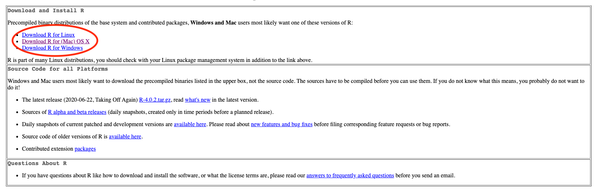
Install R – Step 2
If you are a Mac user, you should see the page as below. You are recommended to download and install the latest version of R (now R-4.5.1 (Great Square Root)), if your OS version allows to do so. Otherwise, choose a previous version, R-3.6.3.
If you are a Windows user, after clicking Download R for Windows, please choose base version, then click Download R-4.5.1 for Windows.
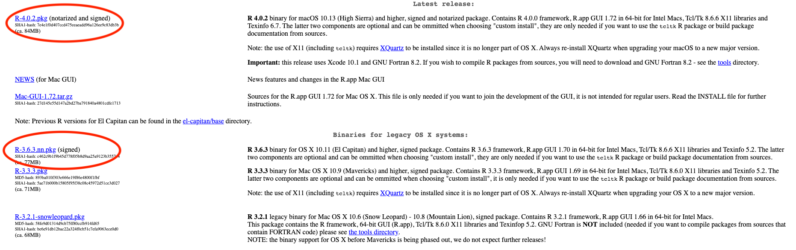
Install R – Step 3
- Once you install R successfully, when you open R, you should be able to see the following R terminal or console:
Windows
Mac
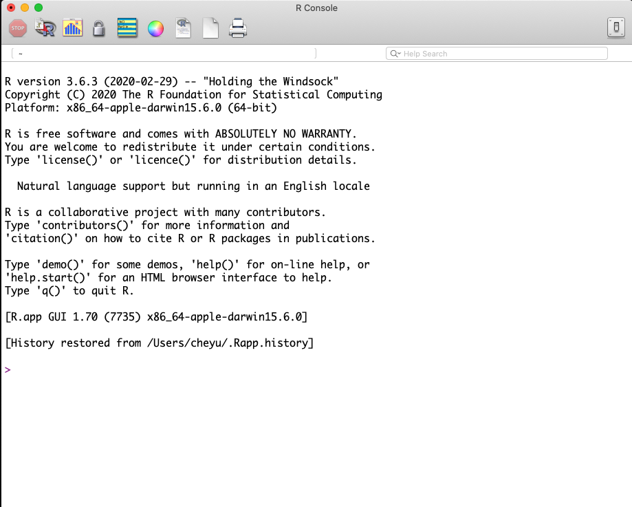
Welcome to the R World!
Now you are ready to use R to do statistical computation.
You can use R like a calculator. After typing your formula, simply hit Enter, you get the answer! For example,
Install RStudio – Step 1
- In the Posit website, on top go to OPEN SOURCE > DOWNLOAD RSTUDIO ->
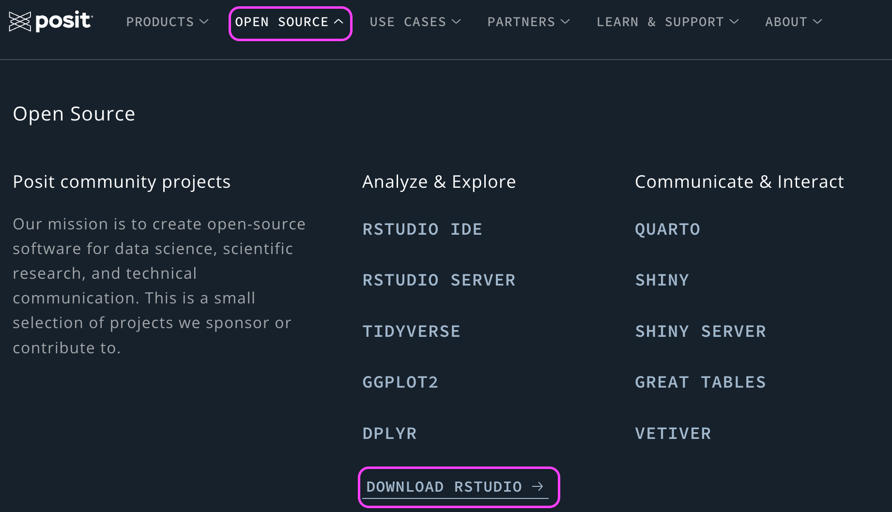
Install RStudio – Step 2
- Click DOWNLOAD RSTUDIO.
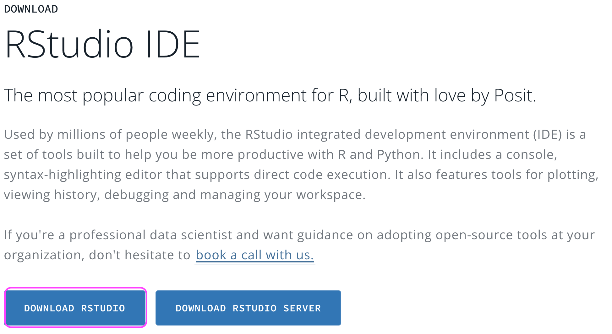
Install RStudio – Step 3
The page will automatically detect your operating system and recommend a version of RStudio that works the best for you that is usually the latest version.
Click DOWNLOAD RSTUDIO DESKTOP FOR [Your OS version].
Follow the standard installation steps and you should get the software.
Make sure that R is installed successfully on your computer before you download and install RStudio.
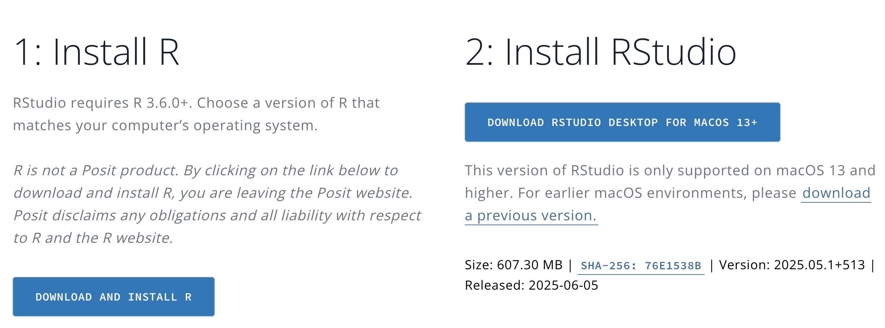
RStudio Screen
When you open RStudio, you should see something similar to the figure below.
If you do, congratulations! You are able to do every statistical computation in R using RStudio locally in your computer.
Footnotes
Wickham and Bryan, R Packages.↩︎